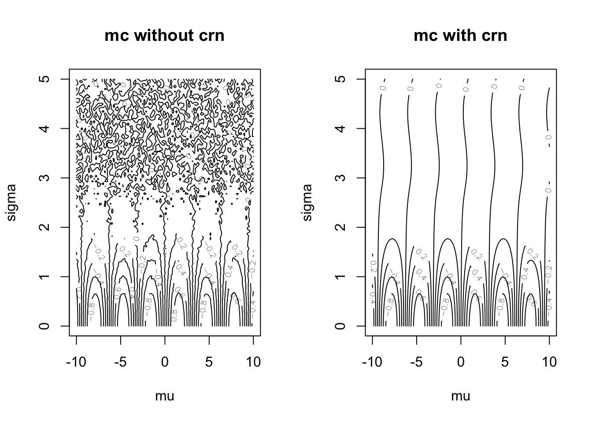
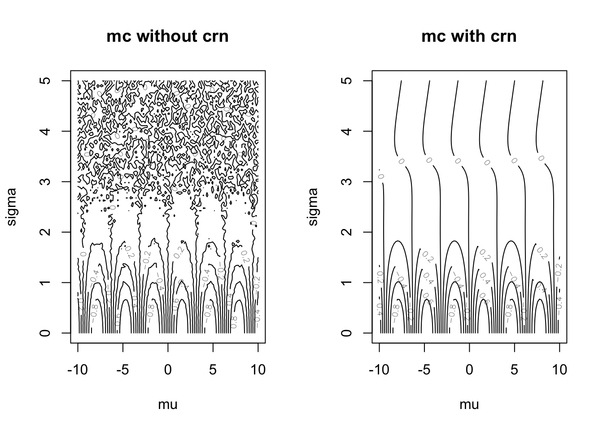

Chapter 3 Odds and Ends
3.1 Input and Output
So far we have been creating small pieces of data within our scripts. This is primarily for pedagogical purposes. In real life, we can have
- data read in from a data set saved on our machine’s hard drive (e.g.
my_data.csv), - data read in from a data base (e.g. MySQL, PostgreSQL, etc.), or
- data created in a script (either deterministic or random).
I focus mostly on the first one. The third is handled with basic assignment, and using specialized functions that are easily found. I avoid the second one because it requires my setting up a data base and teaching you SQL commands.
After we have created something useful, we might be interested in storing our results. We can write out to a database, a text file, or we can save a digitized version of our work space.
3.1.1 Reading In Text Files
3.2 Using Third-Party Code
Before using third-party code, it must first be installed. After it is installed, it must be “loaded in” to your session. I will describe both of these steps in R and Python.
3.2.1 Installing Packages In R
In R, there are thousands of user-created packages. You can download most of these from the Comprehensive R Archive Network. You can also download packages from other publishing platforms like Bioconductor, or Github. Installing from CRAN is more commonplace, and extremely easy to do. Just use the install.packages() function. This can be run inside your R console, so there is no need to type things into the command line.
install.packages("thePackage")3.2.2 Installing Packages In Python
In Python, installing packages is more complicated. Commands must be written in the command line, and there are multiple package managers. This isn’t surprising, because Python is used more extensively than R in fields other than data science.
If you followed the suggestions provided in ??, then you installed Anaconda. This means you will usually be using the conda command. Point-and-click interfaces are made available as well.
conda install the_packageThere are some packages that will not be available using this method. For more information on that situation, see here.
3.2.3 Loading Packages In R
After they are installed on your machine, third-party code will need to be “loaded” into your R or Python session.
Loading in a package is relatively simple in R, however complications can arise when different variables share the same name. This happens relatively often because
- it’s easy to create a variable in the global environment that has the same name as another object you don’t know about, and
- different packages you load in sometimes share names accidentally.
Starting off with the basics, here’s how to load in a package of third-party code. Just type the following into your R console.
library(thePackage)You can also use the require() function, which has slightly different behavior when the requested package is not found.
To understand this more deeply, we need to talk about environments again. We discussed these before in 2.5.3, but only in the context of user-defined functions. When we load in a package with library(), we make its contents available by putting it all in an environment for that package.
An environment holds the names of objects. There are usually several environments, and each holds a different set of functions and variables. All the variables you define are in an environment, every package you load in gets its own environment, and all the functions that come in R pre-loaded have their own environment.
Formally, each environment is pair of two things: a frame and an enclosure. The frame is the set of symbol-value pairs, and the enclosure is a pointer to the parent environment. If you’ve heard of a linked list in a computer science class, it’s the same thing.
Moreover, all of these environments are connected in a chain-like structure. To see what environments are loaded on your machine, and what order they were loaded in, use the search() function. This displays the search path, or the ordered sequence of all of your environments.
search()
## [1] ".GlobalEnv" "package:stats" "package:graphics"
## [4] "package:grDevices" "package:utils" "package:datasets"
## [7] "package:methods" "Autoloads" "package:base"Alternatively, if you’re using RStudio, the search path, and the contents of each of its environments, are displayed in the “Environment” window. You can choose which environment you’d like to look at by selecting it from the dropdown menu. This allows you to see all of the variables in that particular environment. The global environment (i.e. ".GlobalEnv") is displayed by default, because that is where you store all the objects you are creating in the console.

(#fig:rstudio_disp)The Environment Window in RStudio
When you call library(thePackage), the package has an environment created for it, and it is inserted between the global environment, and the most recently loaded package. When you want to access an object by name, R will first search the global environment, and then it will traverse the environments in the search path in order. These has a few important implications.
First, don’t define variables in the global environment that are already named in another environment. There are many variables that come pre-loaded in the
basepackage (to see them, typels("package:base")), and if you like using a lot of packages, you’re increasing the number of names you should avoid using.Second, don’t
libraryin a package unless you need it, and if you do, be aware of all the names it will mask it packages you loaded in before. The good news is thatlibrarywill often print warnings letting you know which names have been masked. The bad news is that it’s somewhat out of your control–if you need two packages, then they might have a shared name, and the only thing you can do about it is watch the ordering you load them in.Third, don’t use
library()inside code that issource’d in other files. For example, if you attach a package to the search path from within a function you defined, anybody that uses your function loses control over the order of packages that get attached.
All is not lost if there is a name conflict. The variables haven’t disappeared. It’s just slightly more difficult to refer to them. For instance, if I load in Hmisc, I get the warning warning that format.pval and units are now masked because they were names that were in "package:base". I can still refer to these masked variables with the double colon operator (::).
library(Hmisc)
## Loading required package: lattice
## Loading required package: survival
## Loading required package: Formula
## Loading required package: ggplot2
##
## Attaching package: 'Hmisc'
## The following objects are masked from 'package:base':
##
## format.pval, units
# format.pval refers to Hmisc's format.pval because it was loaded more recently
# Hmisc::format.pval in this case is the same as above
# base::format.pval this is the only way you can get base's format.pval function3.2.4 Loading Packages In Python
In Python, you use the import statement to access objects defined in another file. It is slightly more complicated than R’s library() function, but it is also more flexible. To make the contents of a package called, say, the_package available, type one of the following inside a Python session.
import the_package
import the_package as tp
from the_package import *To describe the difference between these three approaches, as well as to highlight the important takeaways and compare them with the important takeaways in the last section, we need to discuss what a Python module is, what a package is, and what a Python namespace is.1
A Python
moduleis a separate (when I say separate, I mean separate from the script file you’re currently editing).pyfile with function and/or object definitions in it.2A namespace is “a mapping from names to objects.”
With these definitions, we can define importing. According to the Python documentation, “[t]he import statement combines two operations; it searches for the named module, then it binds the results of that search to a name in the local scope.”
The sequence of places Python looks for a module is called the search path. This is not the same as R’s search path, though. In Python, the search path is a list of places to look for modules, not a list of places to look for variables. To see it, import sys, then type sys.path.
After a module is found, the variable names in the found module become available in the importing module. These variables are available in the global scope, but the names you use to access them will depend on what kind of import statement you used. From there, you are using the same scoping rules that we described in 2.5.6, which means the LEGB acronym still applies.
Here are a few important takeaways that might not be readily apparent:
Python namespaces are unlike R environments in that they are not arranged into a sorted list.
Unlike in R, there is no masking, and you don’t have to worry about the order of
importing things.However, you do have to worry about how you’re
importing things. If you use thefrom the_package import thingone, thingtwoformat ofimporting, you are at risk of re-assigning eitherthingoneorthingtwo, if they already exist. As a rule of thumb, you should never use this form ofimporting.These differences might explain why Python packages tend to be larger than R packages.
3.2.4.1 importing Examples
In the example below, we import the entire numpy package in a way that lets us refer to it as np. This reduces the amount of typing that is required of us, but it also protects against variable name clashing. We then use the normal() function to simulate normal random variables. This function is in the random sub-module, which is a sub-module in numpy that collects all of the pseudorandom number generation functionality together.
import numpy as np # import all of numpy
np.random.normal(size=10)
## array([ 0.69328265, -0.0557448 , 0.4164061 , 0.35271059, -0.56900924,
## 0.13299997, 1.60574639, 0.73467942, 0.88971135, 0.77378393])This is one use of the dot operator (.). We will also use it in TODO, but don’t worry about that for now. normal is inside of random, which it itself inside of np.
As a second example, suppose we were interested in the stats sub-module found inside the scipy package. We could import all of scipy, but just like the above example, that would mean we would need to consistently refer to a variable’s module, the sub-module, and the variable name. For long programs, this can become tedious if we had to type scipy.stats.norm over and over again. Instead, let’s import the sub-module (or sub-package) and ignore the rest of scipy.
from scipy import stats
stats.norm().rvs(size=10)
## array([-0.46477389, -0.31887394, 0.1087272 , 0.80839325, 0.67462368,
## -0.28968389, 0.63026433, 1.29004921, 0.20388607, 1.50873757])So we don’t have to type scipy every time we use something in scipy.stats.
Finally, we can import the function directly, and refer to it with only one letter. This is highly discouraged, though. We are much more likely to accidentally use the name n twice. Further, n is not a very descriptive name, which means it could be difficult to understand what your program is doing later.
from numpy.random import normal as n
n(size=10)
## array([ 0.27063694, 0.99752863, 0.24132258, 0.24624596, 2.06062224,
## -0.83591951, -1.89666912, -1.01868676, 2.2750012 , -0.08610838])Keep in mind, you’re always at risk of accidentally re-using names, even if you aren’t importing anything. For example, consider the following code.
# don't do this!
sum = 3This is very bad, because now you cannot use the sum function that was named in the built-in module. To see what is in your built in module, type the following into your Python interpreter: dir(__builtins__).
3.3 Control Flow
3.3.1 Conditional Logic
We discussed boolean objects in 2.1. We used these for
- counting up number of times a condition appeared, and
- subsetting.
Another way to use them is to conditionally execute code, depending on whether or truth condition of a boolean.
In R,
myName <- "Clare"
if(myName != "Taylor"){
print("you are not Taylor")
}
## [1] "you are not Taylor"In Python, you don’t need curly braces, but the indentation needs to be just right, and you need a colon.
my_name = "Taylor"
if my_name == "Taylor":
print("hi Taylor")
## hi TaylorThere can be more than one truth test. To test alternative boolean conditions, you can add one or more else if (in R) or elif (in Python) blocks. The first block with a boolean that is found to be true will execute, and none of the resulting conditions will be checked.
If no if block or else if/elif block executes, an else block will always execute. That’s why else blocks don’t need to look at a boolean. Whether they execute only depends on the booleans in the previous blocks.
food <- "muffin"
if(food == "apple"){
print("an apple a day keeps the doctor away")
}else if(food == "muffin"){
print("muffins have a lot of sugar in them")
}else{
print("neither an apple nor a muffin")
}
## [1] "muffins have a lot of sugar in them"my_num = 42.999
if my_num % 2 == 0:
print("my_num is even")
elif my_num % 2 == 1:
my_num += 1
print("my_num was made even")
else:
print("you're cheating by not using integers!")
## you're cheating by not using integers!3.3.2 Loops
One line of code generally does one “thing,” unless you’re using loops. Code written inside a loop will execute many times.
The most common loop for us will be a for loop. A simple for loop in R might look like this
myLength <- 9
r <- vector(mode = "numeric", length = myLength)
for(i in seq_len(myLength)){
r[i] <- i
}
r
## [1] 1 2 3 4 5 6 7 8 9seq_len(myLength)gives us avectoriis a variable that takes on the values found in thevector- Code inside the loop (inside the curly braces), is repeatedly executed, and it may or may not reference the dynamic variable
i
my_length = 9
r = []
for i in range(my_length):
r.append(i)
r
## [0, 1, 2, 3, 4, 5, 6, 7, 8]- Unsurprisingly, Python’s syntax opts for indentation and colons instead of curly braces and parentheses,
- Code inside the loop (inside the curly braces), is repeatedly executed, and it may or may not reference the dynamic variable
i forloops in Python are more flexible because they iterate over many different types of data structures,- The
rangedoesn’t generate all the numbers in the sequence at once, so it saves on memory. This can be quite useful for certain applications. However,ris a list that does store all the consecutive integers.
Loop tips:
- If you find yourself copy/paste-ing code, maybe changing a small portion on each line, you should consider using a loop,
-
If a
forloop works for something you’re trying to do, first try to find a replacement function that does what you want. The examples above just made avector/listof consecutive integers. There are many built in functions that accomplish this. Avoiding loops in this case would make your program shorter, easier to read, and (probably much) faster. Also check outapply-ish functions/methods (TODO link) -
Watch out for off-by-one errors. Iterating over the wrong sequence is a common mistake, considering
- Python starts counting from \(0\), while R starts counting from \(1\)
-
sometimes iteration
ireferences thei-1th element of a container -
The behavior of loops is sometimes more difficult to understand if they’re using
breakorcontinue/nextstatements
-
Don’t hardcode variables. In the example above, the
myLengthormy_lengthvariable could be referenced in many places throughout the entire program. If you wanted to change the number of iterations in your program (which happens all the time), and you did hardcode the length in a bunch of places throughout the program, you would need to hunt down all those changes. Be kind to yourself and don’t give yourself extra work!
Python provides an alternative way to construct lists similar to the one we constructed in the above example. They are called list comprehensions. You can incorporate iteration and conditional logic in one line of code.
[3*i for i in range(10) if i%2 == 0]
## [0, 6, 12, 18, 24]You might also have a look at generator expressions and dictionary comprehensions.
R can come close to replicating the above behavior with vectorization, but the conditional part is hard to achieve without subsetting.
3*seq(0,9)[seq(0,9)%%2 == 0]
## [1] 0 6 12 18 243.3.3 A Longer Example
3.3.3.1 Description of Accept-Reject Sampling
An example of an algorithm that uses conditional logic is the accept-reject sampling method (TODO cite). This is useful for when we want to sample from a target probability density \(p(x)\), using another distribution called a proposal ditribution \(q(x)\).
\(q(x)\) is probably a distribution that is easy to sample from and is easy to evaluate pointwise. For example, a uniform distribution satisfies these criteria because both R and Python have functions that accomplish these two things (e.g. sampling can be done with runif in R and np.random.uniform in Python). \(p(x)\) is generally more “complicated.” If it wasn’t, we would try to find some built-in function for it.
One common way a distribution can be complicated is that it can have an unknown normalizing constant–one that is difficult or impossible to solve using calculus. This happens a lot in Bayesian Statistics, for example.4. We might write down \[ p(x) = \frac{f(x)}{\int f(x) dx}, \] and this is guaranteed to be a probability density function as long as \(f(x) \ge 0\) and \(\int f(x) dx < \infty\), but we might have no idea how to solve the denominator. In this case, \(f(x)\) is easy to evaluate pointwise, but \(p(x)\) is not.
This algorithm makes use of an auxiliary random variable that is sampled from a \(\text{Bernoulli}(p)\) distribution. As long as \(0 < p < 1\), a Bernoulli random variable \(Y\) is either \(0\) or \(1\). The probability it takes the value \(1\) is \(p\), while the probability that it takes the value \(0\) is \(1-p\). A coin flip is a good example use-case for this distribution. Coin flips are commonly assumed to be distributed as\(\text{Bernoulli}(.5)\). At least for fair coins, there is an equal chance that the coin lands heads (i.e. \(0\)) or tails (i.e. \(1\)).
The most difficult part about using this algorithm is that one must calculate the probability parameter of this Bernoulli random variable. This involves calculating (by hand) an upper bound \(M\) for the ratio \(f(x) / q(x)\). This bound has to hold uniformly, meaning that it is a constant number that is greater than the ratio no matter what \(x\) we plug in.
Below is one step of the accept-reject algorithm.
Algorithm 1: Accept-Reject Sampling (One Step)
- Calculate \(M > \frac{f(x)}{q(x)}\) (the smaller the better)
- Sample \(X\) from \(q(x)\)
- Sample \(Y \mid X\) from \(\text{Bernoulli}\left(\frac{f(X)}{q(X)M}\right)\)
- If \(Y = 1\), then return \(X\)
- Otherwise, return nothing
Multiple samples will be required, so this process needs to be iterated many times. There are two ways to do this. If you want to iterate a fixed number of times, you can use a for loop. However, in that case, you will end up with a random number of samples. On the other hand, if you want a nonrandom number of samples, you will probably want a while loop. This is the approach the example below takes. The while loop will continue iterating until a condition is false. In our case, we want to loop until we receive the total number of samples we requested.
3.3.3.2 A Specific Example
Here is a specific example. Let’s say our target5 is \[ p(x) = \begin{cases} \frac{x^2(1-x)}{\int_0^1 x^2(1-x) dx} & 0 < x < 1 \\ 0 & \text{otherwise} \end{cases}. \] The denominator, \(\int_0^1 x^2(1-x) dx\), is the target’s normalizing constant. You might know how to solve this integral, but let’s pretend for the sake of our example that it’s too difficult for us. We want to sample from \(p(x)\) while only being able to evaluate (not sample) from its normalized version.
Next, let’s choose a uniform distribution for our proposal distribution: \[ q(x) = \begin{cases} 1 & 0 < x < 1 \\ 0 & \text{otherwise} \end{cases} \] We can plot all three functions.

Here’s some Python code that attempts to sample once from \(p(x)\). Sometimes proposals are not accepted. When that happens, the function returns None.
import numpy as np
def f(samp):
"""the unnormalized density"""
return (1-samp)*(samp**2)
def attempt_one_samp():
"""attempts to sample from target distribution, using uniform as a proposal"""
x = np.random.uniform()
M = 4/27
bern_prob_param = f(x)/M
accept = np.random.binomial(1, bern_prob_param) == 1
if accept:
return xdef sample_from_target(num_times):
"""sample num_times from the target distribution"""
samps = []
while len(samps) < num_times:
potential_samp = attempt_one_samp()
if potential_samp is not None:
samps.append(potential_samp)
return samps- we used a
whileloop instead of aforloop because we did not know how many iterations it would take to getnum_timessamples - We are following the Python style guide and using the
is notkeyword to check if something isNone
In chapter TODO, we’ll show you the code that you can use to generate the plot below.

Python: if if/else if/elif/else for loops list comprehensions
3.4 Reshaping and Combining Data Sets
3.4.1 Ordering and Sorting Data
Sorting a data set, in ascending order, say, is a common task. You might need to do it because
- ordering and ranking is commonly done in nonparametric statistics,
- you want to inspect the most “extreme” observations in a data set,
- it’s a pre-processing step before generating visualizations.
In R, it all starts with vectors. There are two common functions you should know: sort and order. sort returns the sorted data, while order returns the order indexes.
sillyData <- rnorm(5)
print(sillyData)
## [1] 0.1622072 0.4766087 1.1869507 1.0224729 -0.8521702
sort(sillyData)
## [1] -0.8521702 0.1622072 0.4766087 1.0224729 1.1869507
order(sillyData)
## [1] 5 1 2 4 3order is useful if you’re sorting a data frame by a particularly column. Below, we inspect the top 5 most expensive cars. Notice that we need to clean up the MSRP (a character vector) a little first. We use the function gsub to find patterns in the text, and replace them with the empty string.
carData <- read.csv("data/cars.csv")
noDollarSignMSRP <- gsub("$", "", carData$MSRP, fixed = TRUE)
carData$cleanMSRP <- as.numeric(gsub(",", "", noDollarSignMSRP, fixed = TRUE))
rowIndices <- order(carData$cleanMSRP, decreasing = TRUE)[1:5]
carData[rowIndices,c("Make", "Model", "MSRP", "cleanMSRP")]## Make Model MSRP cleanMSRP
## 335 Porsche 911 GT2 2dr $192,465 192465
## 263 Mercedes-Benz CL600 2dr $128,420 128420
## 272 Mercedes-Benz SL600 convertible 2dr $126,670 126670
## 271 Mercedes-Benz SL55 AMG 2dr $121,770 121770
## 262 Mercedes-Benz CL500 2dr $94,820 94820In Python, Numpy has np.argsort and np.sort.
import numpy as np
silly_data = np.random.normal(size=5)
print(silly_data)
## [-0.40864436 -1.24119818 -0.0021006 -0.72291159 0.75297013]
np.sort(silly_data)
## array([-1.24119818, -0.72291159, -0.40864436, -0.0021006 , 0.75297013])
np.argsort(silly_data)
## array([1, 3, 0, 2, 4])For Pandas’ DataFrames, most of the functions I find useful are methods attached to the DataFrame class. That means that, as long as something is inside a DataFrame, you can use dot notation. This is discussed more in TODO.
import pandas as pd
car_data = pd.read_csv("data/cars.csv")
car_data['no_dlr_msrp'] = car_data['MSRP'].str.replace("$", "", regex = False)
car_data['clean_MSRP'] = car_data['no_dlr_msrp'].str.replace(",","").astype(float)
car_data = car_data.sort_values(by='clean_MSRP', ascending = False)
car_data[["Make", "Model", "MSRP", "clean_MSRP"]].head(5)
## Make Model MSRP clean_MSRP
## 334 Porsche 911 GT2 2dr $192,465 192465.0
## 262 Mercedes-Benz CL600 2dr $128,420 128420.0
## 271 Mercedes-Benz SL600 convertible 2dr $126,670 126670.0
## 270 Mercedes-Benz SL55 AMG 2dr $121,770 121770.0
## 261 Mercedes-Benz CL500 2dr $94,820 94820.0Pandas DataFrames and Series have a replace method. We use this to remove dollar signs and commas from the MSRP column. Note that we had to access the .str attribute of the Series column before we used it. After the string was processed, we converted it to a Series of floats with the astype method.
Finally, sorting the overall data frame could have been done with the same approach as the code we used in R (i.e. raw subsetting by row indexes), but there is a built in method called sort_values that will do it for us.
3.4.2 Stacking Data Sets and Placing them Shoulder to Shoulder
Stacking data sets on top of each other is a common task. You might need to do it if
- you need to add new a new row (or many rows) to a data frame,
- you need to recombine data sets (e.g. recombine a train/test split), or
- you’re creating a matrix in a step-by-step way.
In R, this can be done with rbind (short for “row bind”)
realEstate <- read.csv("data/albemarle_real_estate.csv")
train <- realEstate[-1,]
test <- realEstate[1,]
head(rbind(test, train))
## YearBuilt YearRemodeled Condition NumStories FinSqFt Bedroom FullBath
## 1 2006 0 Average 1.00 1922 3 3
## 2 2003 0 Average 1.00 1848 3 2
## 3 1972 0 Average 1.00 1248 2 1
## 4 1998 0 Good 1.00 1244 1 1
## 5 1886 0 Average 1.86 1861 4 1
## 6 1910 0 Fair 1.53 1108 3 1
## HalfBath TotalRooms LotSize TotalValue City
## 1 0 10 5.000 409900 CROZET
## 2 0 7 61.189 523100 CROZET
## 3 0 4 1.760 180900 EARLYSVILLE
## 4 0 3 50.648 620700 CROZET
## 5 0 6 3.880 162500 CROZET
## 6 0 6 8.838 167200 CROZET
sum(rbind(test, train) != realEstate)
## [1] 0The above example was with data.frames. This example of rbind is with matrix objects.
rbind(matrix(1,nrow = 2, ncol = 3),
matrix(2,nrow = 2, ncol = 3))
## [,1] [,2] [,3]
## [1,] 1 1 1
## [2,] 1 1 1
## [3,] 2 2 2
## [4,] 2 2 2In Python, you can stack data frames with pd.concat. It has a lot of options, so feel free to peruse those. You can also replace the call to pd.concat below with test.append(train).
import pandas as pd
real_estate = pd.read_csv("data/albemarle_real_estate.csv")
train = real_estate.iloc[1:,]
test = real_estate.iloc[[0],] # need the extra brackets!
pd.concat([test,train], axis=0).head() # also
## YearBuilt YearRemodeled Condition ... LotSize TotalValue City
## 0 2006 0 Average ... 5.000 409900 CROZET
## 1 2003 0 Average ... 61.189 523100 CROZET
## 2 1972 0 Average ... 1.760 180900 EARLYSVILLE
## 3 1998 0 Good ... 50.648 620700 CROZET
## 4 1886 0 Average ... 3.880 162500 CROZET
##
## [5 rows x 12 columns]
(pd.concat([test,train], axis=0) != real_estate).sum().sum()
## 0Take note of the extra square brackets when we create test. If you use real_estate.iloc[0,] instead, it will return a Series with all the elements coerced to the same type, and this won’t pd.concat properly with the rest of the data!
3.4.3 Merging or Joining Data Sets
If you have two different data sets that provide different information about the same things, you put them together using a merge (aka join) statement. The resulting data set is wider, and possibly with fewer rows. In R, you can use the merge function. In Python, you can use the merge method.
Suppose you have to sets of supposedly anonymized data about individual accounts on some online platforms.
baby1 <- read.csv("data/baby1.csv", stringsAsFactors = FALSE)
baby2 <- read.csv("data/baby2.csv", stringsAsFactors = FALSE)
head(baby1)
## idnum height.inches. email_address
## 1 1 74 fakeemail123@gmail.com
## 2 3 66 anotherfake@gmail.com
## 3 4 62 notreal@gmail.com
## 4 23 62 notreal@gmail.com
head(baby2)
## idnum phone email
## 1 3901283 5051234567 notreal@gmail.com
## 2 41823 5051234568 notrealeither@gmail.com
## 3 7198273 5051234568 anotherfake@gmail.comThe first thing you need to ask yourself is “which column is the unique identifier that is shared between these two data sets?” In our case, they both have an “identification number” column, could that be it? Let’s suppose for the sake of argument that these two data sets are coming from different online platforms, and these two places use different schemes to number their users.
In this case, they both share a column with (possibly) the same information about email addresses. They are named differently in each data set, so we must specify both column names.
# in R
merge(baby1, baby2, by.x = "email_address", by.y = "email")
## email_address idnum.x height.inches. idnum.y phone
## 1 anotherfake@gmail.com 3 66 7198273 5051234568
## 2 notreal@gmail.com 4 62 3901283 5051234567
## 3 notreal@gmail.com 23 62 3901283 5051234567In Python, merge is a method attached to each DataFrame instance.
# in Python
baby1.merge(baby2, left_on = "email_address", right_on = "email")
## idnum_x height(inches) ... phone email
## 0 3 66 ... 5051234568 anotherfake@gmail.com
## 1 4 62 ... 5051234567 notreal@gmail.com
## 2 23 62 ... 5051234567 notreal@gmail.com
##
## [3 rows x 6 columns]The email addresses anotherfake@gmail.com and notreal@gmail.com exist in both data sets, so each of these email addresses will end up in the result data frame. The rows in the result data set are wider and have more attributes for each individual.
Notice the duplicate email address, too. In this case, either the user signed up for two accounts using the same email, or one person signed up for an account with another person’s email address. In the case of duplicates, both rows will match with the same rows in the other data frame.
Also, in this case, all email addresses that weren’t found in both data sets were thrown away. This does not necessarily need to be the intended behavior. For instance, if we wanted to make sure no rows were thrown away, that would be possible. In this case, though, for email addresses that weren’t found in both data sets, some information will be missing. Recall that Python and R handle missing data differently (see 2.2.8).
# in R
merge(baby1, baby2,
by.x = "email_address", by.y = "email",
all.x = TRUE, all.y = TRUE)
## email_address idnum.x height.inches. idnum.y phone
## 1 anotherfake@gmail.com 3 66 7198273 5051234568
## 2 fakeemail123@gmail.com 1 74 NA NA
## 3 notreal@gmail.com 4 62 3901283 5051234567
## 4 notreal@gmail.com 23 62 3901283 5051234567
## 5 notrealeither@gmail.com NA NA 41823 5051234568# in Python
baby1.merge(baby2,
left_on = "email_address", right_on = "email",
how = "outer")
## idnum_x height(inches) ... phone email
## 0 1.0 74.0 ... NaN NaN
## 1 3.0 66.0 ... 5.051235e+09 anotherfake@gmail.com
## 2 4.0 62.0 ... 5.051235e+09 notreal@gmail.com
## 3 23.0 62.0 ... 5.051235e+09 notreal@gmail.com
## 4 NaN NaN ... 5.051235e+09 notrealeither@gmail.com
##
## [5 rows x 6 columns]You can see it’s slightly more concise in Python. If you are familiar with SQL, you might have heard of inner and outer joins. This is where Pandas takes some of its argument names from.
3.4.4 Long Versus Wide Data
TODO
3.5 Visualization
3.5.1 Base R Plotting
R comes with some built-in functions plot, hist, boxplot, etc. Many of these reside in package:graphics, which comes pre-loaded into the search path. plot on the other hand, is higher up the search path in package:base–it is a generic method whose methods might be in package:graphics or some place else.
Base plotting covers most needs, so that’s what we spend most time with. However, there are a large number of third-party libraries for plotting that you might consider looking into if you want to follow a certain aesthetic, or if you want plotting specialized for certain cases (e.g. geospatial plots).
Recall our Albemarle Real Estate data set.
df <- read.csv("data/albemarle_real_estate.csv")
head(df)
## YearBuilt YearRemodeled Condition NumStories FinSqFt Bedroom FullBath
## 1 2006 0 Average 1.00 1922 3 3
## 2 2003 0 Average 1.00 1848 3 2
## 3 1972 0 Average 1.00 1248 2 1
## 4 1998 0 Good 1.00 1244 1 1
## 5 1886 0 Average 1.86 1861 4 1
## 6 1910 0 Fair 1.53 1108 3 1
## HalfBath TotalRooms LotSize TotalValue City
## 1 0 10 5.000 409900 CROZET
## 2 0 7 61.189 523100 CROZET
## 3 0 4 1.760 180900 EARLYSVILLE
## 4 0 3 50.648 620700 CROZET
## 5 0 6 3.880 162500 CROZET
## 6 0 6 8.838 167200 CROZETIf we wanted to get a general idea of how expensive homes were in Albemarle County, we could use a histogram. This helps us visualize a univariate numerical variable/column. Below I plot the (natural) logarithm of home prices.
hist(log(df$TotalValue),
xlab = "natural logarithm of home price", main = "Super-Duper Plot!")
I specified the xlab= and main= arguments, but there are many more that could be tweaked. Make sure to skim the options in the documentation (?hist).
plot is useful for plotting two univariate numerical variables. This can be done in time series plots (variable versus time) and scatter plots (one variable versus another).
par(mfrow=c(1,2))
plot(df$TotalValue, df$LotSize,
xlab = "total value ($)", ylab = "lot size (sq. ft.)",
pch = 3, col = "red", type = "b")
plot(log(df$TotalValue), log(df$LotSize),
xlab = "log. total value", ylab = "log. lot size",
pch = 2, col = "blue", type = "p")
abline(h = log(mean(df$LotSize)), col = "green")
par(mfrow=c(1,1))I use some of the many arguments available (type ?plot). xlab= and ylab= specify the x- and y-axis labels, respectively. col= is short for “color.” pch= is short for “point character.” Changing this will change the symbol shapes used for each point. type= is more general than that, but it is related. I typically use it to specify whether or not I want the points connected with lines.
I also use a couple other functions. abline is used to superimpose lines over the top of a plot. They can be horizontal, vertical, or you can specify them in slope-intercept form, or by providing a linear model object. I also used par to set a graphical parameter. The graphical parameter par()$mfrow sets the layout of a multiple plot visualization. I then set it back to the standard \(1 \times 1\) layout afterwards.
3.5.2 Plotting with Matplotlib
3.6 Exercises
Write a Metropolis-Hastings algorithm.
Make a gif
What kind of situation would a left- or right-join be used?
Make a “phase plot”
I am avoiding any mention of R’s namespaces and modules. These are things that exist, but they are different from Python’s namespaces and modules, and are not within the scope of this text.↩︎
The scripts you write are modules. They come with the intention of being run from start to finish. Other non-script modules are just a bag of definitions to be used in other places.↩︎
Sometimes a package is called a library but I will avoid this terminology.↩︎
The posterior distribution is usually the object of interest in Bayesian statistics. According to Bayes’ Rule, the unnormalized posterior is usually the product of two “easy” functions. However, integrating the product is not always possible!↩︎
This is the density of a \(\text{Beta}(3,2)\) random variable, if you’re curious.↩︎